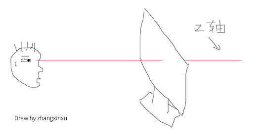
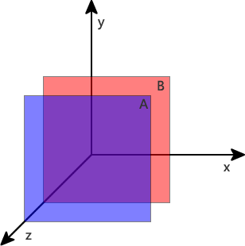

【CSS-task】
小课堂【郑州第29期】
主 题：z-index与层叠上下文
分享人：王义山
目录
1.背景介绍
2.知识剖析
3.常见问题
4.解决方案
5.编码实战
6.扩展思考
7.参考文献
8.更多讨论
1.背景介绍
在这个世界上，凡事都有一定的规则和顺序，俗话说：“无规矩不成方圆”。生活中，我们去吃饭，买东西，甚至上厕所，都有先来后到的潜规则。那么，在css的大千世界里，也同样如此。平时，各元素各就其位，看不出什么差异。但是，当有显示地盘冲突的时候，其中的先后顺序，显示规则，就可以大展身手了。
默认状态下，网页是没有偏移角的垂直视觉显现的。当元素的显示发生层级重叠的时候，我们就可以利用z-index和层叠上下文，来控制它们的显示了。
好，接下来，就让我们一起揭开z-index和层叠上下文的神秘面纱！
2.知识剖析
第一，首先，看看z-index
z-index含义：z-index属性指定了元素及其子元素的z-轴顺序，而z-顺序决定哪个元素在上面，通常较大的z-index值，会覆盖较低的。
 z-index支持的属性值：
1.z-index：auto;默认值（ie6/ie7 为 0）
2.z-index: 整数值
3.z-index: inherit
基本特性：
1.支持负值
2.支持css3动画
3.在css2.1时代需要和定位元素配合使用
z-index与css定位属性
如果不考虑css3,只有定位元素的z-index才起作用。
- 1. 对于同级元素，默认(或position:static)情况下文档流后面的元素会覆盖前面的。（后来居上）
- 2.对于同级元素，position不为static且z-index存在的情况下z-index大的元素会覆盖z-index小的元素，即z-index越大优先级越高。
- 3.IE6/7下position不为static，且z-index不存在时z-index为0，除此之外的浏览器z-index为auto。
第二，什么是层叠上下文？
层叠上下文:英文叫“stacking content”,是HTML中的一个三维的概念。如果一个元素含有层叠上下文，我们可以理解为这个元素在z轴上就“高人一等”。这里出现了z轴，z轴是我们的眼睛与页面的垂直抽象的距离。
层叠上下文是一个概念，跟BFC类似，概念的这个东西是比较抽象的，要好好理解理解。
什么是层叠水平？
层叠水平，英文称作”stacking level”，决定了同一个层叠上下文中元素在z轴上的显示顺序。level这个词很容易让我们联想到我们人类世界中的三六九等、论资排辈。人的世界中，每个人都是独立的个体，包括同卵双胞胎，有差异就有区分。例如，双胞胎虽然长得像Ctrl+C/Ctrl+V得到的，但实际上，出生时间还是有先后顺序的，先出生的那个就大，哥哥或姐姐。网页中的元素也是如此，页面中的每个元素都是独立的个体，他们一定是会有一个类似的排名排序的情况存在。而这个排名排序、论资排辈就是我们这里所说的“层叠水平”。
什么是层叠顺序？
再来说说层叠顺序，“层叠顺序”英文称作”stacking order”. 表示元素发生层叠时候有着特定的垂直显示顺序，注意，这里跟上面两个不一样，上面的层叠上下文和层叠水平是概念，而这里的层叠顺序是规则。
说了层叠顺序是规则，那么到底是什么规则呢？(先不考虑css3)是这样的：
按从高到低的顺序：
1.z-index值为正值
2.z-index值为auto(也可以看为0)
3.inline/inline-block水平的盒子
4.float浮动盒子
5.block块状水平盒子
6.z-index值为负值的元素
7.blacground和border指的是层叠上下文元素的边框和背景色。
3.常见问题
问题:z-index的滥用问题
4.解决方案
z-index的1，2，3规则：
泛滥的z-index,既不浪费代码，又不利于后期维护和他人接受。但是，面对的复杂的交互，有时候我们还是需要z-index的，那么如何合理使用z-index呢？
1.归门别类。将z-index分为两派，分为“地面派”和“天空派”。“天空派”就是指遮罩弹框，类似这种，或是其他一些交互组件等；其余的就算是“地面派”了。
2.应用1, 2 ,3规则。地面派元素的z-index没有，或为1，或是2，或是3。因为一个页面交互再怎么复杂，也不可能正好是前面一个元素比后面元素层级高，而且有3~4个元素。也就是说，对于“地面”元素，我们只要使用[null, 1, 2, 3]之间的层级就能应付所有的情况。于是乎，我们想要出现层级混乱的情况都比较难了。
5.编码实战
说了那么多层叠上下文，那么层叠上下文到底是什么鬼？看一下层叠上下文的创建：
如下代码：


如下代码：
6.扩展思考
问题：为什么内联元素的层叠顺序要比浮动元素和块状元素都高？

7.参考文献
参考：鑫空间
8.更多讨论
讨论点：多次提到，一旦普通元素具有了层叠上下文，其层叠顺序就会变高。那它的层叠顺序究竟在哪个位置呢？
鸣谢
感谢大家观看
BY : 沁修 | 王义山